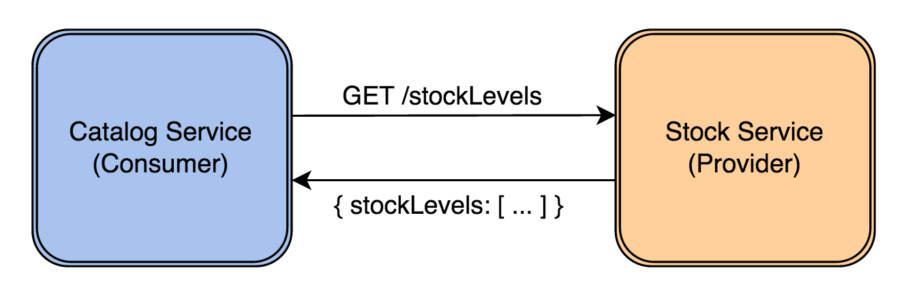

Leaving user interface for web developers
Distilling Microservices Patterns
Microservices recap
Why miroservices?
Better scaling (of people not solutions)
Decentralizing decisions
Frequent deployments
Reduced local complexity
What about overall complexity? But…
Problems we had
Builds which takes forever
Deployments which takes forever
Implementation of a features which takes forever
MTTRF (mean time to resolve failure) damaging organization reputation
Atomic releases, you need to wait until all features are complete to release
In case of failure you rollback all changes, even these ones which worked
Problems we have
No-one completely grasp the whole solutions. But is it a bad thing?
Mind-shift requiring new operating model
When things goes wrong it first the where problem rather than why?
Potential increase in latency
Conway’s Law
Any organization that designs a system (defined broadly) will produce a design whose structure is a copy of the organization’s communication structure.
— M. Conway
How are we solving it?
Failure isolation - bulkheading
Autonomous services - service promises its own behaviour by publishing its protocol/API
Single responsibility - encapsulate a single concept
State ownership
Asynchronous, message based communication
Location transparency
Set of patterns
Externalize User Interface
Consumer driven contracts
Front-end architectures (API Gateway)
Circuit breaker
Load balancing and Service orchestration
Externalized configuration and service discovery
Distributed logging and monitoring
Application security
Pattern #1: Externalized UI
Intent
In order to have a meaningful and valuable user experience, information must be
Useful: Your content should be original and fulfill a need
Usable: Site must be easy to use
Desirable: Image, identity, brand, and other design elements are used to evoke emotion and appreciation
Findable: Content needs to be navigable and locatable on-site and off-site
Accessible: Content needs to be accessible to people with disabilities(+ Inclusive)
Credible: Users must trust and believe what you tell them
Problem
- Refreshing frontend
Stack changes (migrating from JSP, JSF, Struts 1.x, GWT - you call it)
Hard to find th right people.
Full-stack that goes beyond backend and frontend in JavaScript
Stack incompatibility
Need to know Java to do JavaScript (GWT)
Need to know Maven to build the application
Save - redeploy - refresh vs. Save - refresh
Discussion
Duality of the technology stack
NodeJS + npm + bower + webpack …
Java + Maven / Gradle / …
Nobody wants JSF…
- Needs and tools mismatch
some features and impossible (or unbelievably expensive)
30 days for simple button change
working against the framework, not together with it
look-and-feel expectations
free canvas vs. component based approach
Material Design vs Adobe Flex UI Components
- Organizational shift
unable to find the right people for the job
different aesthetics between backend engineers and frontend engineers
the myth of full stack developer
new roles (User Experience Designer)
old communication problems (us vs. them)
Structure - Build process
Maven
Orchestrate external build process through Maven
Collect results into a single distribution
JAR, Zip - you call it
From server perspective the whole JavaScript is 'rather static'
Structure - Deployment
What was created in the previous step is actually a WebJar
A client-side web library packaged into JAR (Java Archive) file
Servlet 3.0 specification prescribes way to server static assets from Jar files
the WebJars that are in the
WEB-INF/libdirectory are automatically made available as static resourcesthis works because anything in a
META-INF/resourcesdirectory in a JAR inWEB-INF/libis automatically exposed as a static resource.
The WebJar needs to be a dependency of the application
Structure - Splitting the application
Split EARs into multiple WARs
One application per server
Build, deploy and manage independently

Exercise
Pattern #2: Consumer driven contracts
Intent
Consumer Driven Contracts drives the development of the Provider from its Consumers point of view, which means consumer describes what and how it wants to receive the information (in a form of a contract) and then provider implements the service following the given contract. It allows testing interactions between service providers and consumers in isolation against a contract.
- As producers
We are trying to ensure that when we deploy a new service to production, our changes won’t break consumers.
- As consumers
We want to know early (design-time, not runtime) that producer is changing.
Problem
In-process calls (methods, services,
@LocalEJBs) are replaced with out-of-process calls (HTTP, AMPQ)In microservices environments, different services are no longer wired together under the same runtime. Changes in the exposed interfaces for these services can no longer be caught by the compiler.
Without the necessary precautions, there are a lot of ways these interactions can be broken by changes made in the different services
(…) gives you the certainty that the stubs that you’re using were created by the service that you’re calling. Also if you can use them it means that they were tested against the producer’s side. In other words - you can trust those stubs.
Discussion

- Things that can go with integration like this
Change of the endpoint URL (e.g. GET
/stockLevelsrenamed to GET/stockLevel)Change in the expected parameters (e.g. GET
/stockLevelsexpecting a new mandatorycategoryfield)Change in the response payload (returns an
array, instead of having anarraywrapped in anobject)
Structure
The consumer defines what it expects from a specific request to a service
In a way accepted both for consumer and producer
The provider and the consumer agree on this contract
Provider needs to know about the tests, validate them
Consumers and provider might have to agree on some form of common state (if the provider is not stateless or depends on other services)
The provider continuously verifies that the contract is fulfilled


Example
Exercise
Pattern #3: API Gateway
Intent
Direct Client‑to‑Microservice communication rarely makes sense, due to:
mismatch between the needs of the client and the fine‑grained APIs exposed by each of the microservices,
some communication protocols might not be web-friendly (binary RPC protocols used by some AMQP messaging protocols) - neither browser not firewall friendly,
tight coupling might appear and it can make refactoring microservices difficult.
Problem

Discussion
- API Gateway
a server that is the single entry point into the system
similar to the Facade pattern from object‑oriented design
encapsulates the internal system architecture and provides an API that is tailored to each client
might have other responsibilities such as authentication, monitoring, load balancing, caching, request shaping and management, and static response handling

- Benefits
encapsulates the internal structure of the application
provides each kind of client with a specific API
reduces the number of round trips between the client and application
simplifies the client code
- Drawbacks
additional system (landscape) component (to be developed, deployed and managed)
potential bottleneck
API Gateway must be updated in order to expose each microservices endpoint
Implementation
- Various design issues for consideration
performance and scalability
service invocation
service discovery
reactive programming model
handling partial failures
- Performance and scalability
asynchronous and nonblocking I/O

- Service invocation
Different services might embrace different inter-process communication styles
Message brokers (JMS / AMQP)
Brockerless (Zeromq)
Synchronous HTTP
- Service discovery
API Gateway needs information about location (IP address) of each microservice it communicates with
This information cannot be hardwire, due to dynamic nature of the microservice environment
While infrastructure elements (message brokers) might have static location, application services might change from deployment to deployment
- Reactive programming model
Important when goes beyond simple routing requests to an appropriate backend service
Dependency between requests
validate the request by calling an authentication service
routing the request to a backend service afterwards
Managing multiple, dependent asynchronous calls
- Handling partial failures
some downstream services might respond slowly or be unavailable
API Gateway should never block indefinitely waiting for a response
failure handling might depend on the specific scenario and which service is failing (default value, static / cached data, or returning error to a client)
Examples
Neflix Zuul
Amazon API Gateway
Homegrown implementation
Exercise
Pattern #4: Circuit breaker
Intent
Detect excess usage, fail first, and open the circuit. More abstractly, the circuit breaker exists to allow one subsystem (an electrical circuit) to fail (excessive current draw, possibly from a short-circuit) without destroying the entire system (the house).
Release It
— Michael Nygard
— Michael Nygard
Problem
To contain and manage failure without having it cascade throughout the services participating in the workflow:
never be sure how the other system will behave when the communication diverge from the “happy path”
never trust that the other service will behave according to the established protocol
minimize the risk of having one system overloading another during unexpected load increase
avoiding cascading failures requires services that are fully decoupled and isolated
Discussion
Bulkheading has been used in the ship construction for centuries as a way to “create watertight compartments that can contain water in the case of a hull breach or other leak.” The ship is divided into distinct and completely isolated watertight compartments, so that if compartments are filled up with water, the leak does not spread and the ship can continue to function and reach its destination.

Resilience - the ability to heal from failure - depends on compartmentalization and containment of failure, and can only be achieved by breaking free from the strong coupling of synchronous communication.
Reactive Microservices Architecture
— Jonas Boner
— Jonas Boner
- Timeouts
Easiest way to accomodate a failure of upstream service
How long can I wait?
Important on all out-of-process calls + default timeout for everything
Log timeouts, analyze and change them accordingly
- Circuit breakers
Capture failures
Retry tasks and
If the failure persists, quarantine the service for a specific period of time while waiting for the service to recover


Structure
setup_timer()
try(client.call()) {
if (unsuccessful) {
adjust_counters()
}
}Example
- Tools
- Flavours
AOP approach (Hystrix)
Callable approach (Failsafe)
Example (2)
Executable logic can be passed through Failsafe as simple lambda expressions or method references. In Hystrix, your executable logic needs to be placed in a HystrixCommand implementation.
Asynchronous executions in failsafe are performed on a user supplied ThreadPool / Scheduler. In Hystrix, asynchronous commands are executed on internally managed thread pools for particular dependencies.
Failsafe supports retries in addition to circuit breakers
Implementation
public Object run() throws Exception {
long start = System.currentTimeMillis();
try {
//set timers to reset circuit
if (errorCounter >= maxNbrOfFailures) return defaultValue;
return ic.proceed();
} catch (Exception ex) {
errorCounter++;
throw ex;
} finally {
long duration = System.currentTimeMillis() - start;
if (duration >= timeout)
errorCounter++;
}
}Rules of thumb - timeouts
- Apply to Integration Points, Blocked Threads, and Slow Responses
The Timeouts pattern prevents calls to Integration Points from becoming Blocked Threads. Thus, they avert Cascading Failures.
- Apply to recover from unexpected failures
When an operation is taking too long, sometimes we don’t care why…we just need to give up and keep moving. The Timeouts pattern lets us do that.
- Consider delayed retries
Most of the explanations for a timeout involve problems in the network or the remote system that won’t be resolved right away. Immediate retries are liable to hit the same problem and result in another timeout. That just makes the user wait even longer for his error message. Most of the time, you should queue the operation and retry it later.
Rules of thumb - circuit breaking
- Don’t do it if it hurts
Circuit Breaker is the fundamental pattern for protecting your system from all manner of Integration Points problems. When there’s a difficulty with Integration Points, stop calling it!
- Use together with Timeouts
Circuit Breaker is good at avoiding calls when Integration Points has a problem. The Timeouts pattern indicates that there is a problem in Integration Points.
- Expose, track, and report state changes
Popping a Circuit Breaker always indicates there is a serious problem. It should be visible to operations. It should be reported, recorded, trended, and correlated.
Exercise
Pattern #5: Service discovery
Intent
- All solutions under Service Discovery umbrella provide
mechanism for an instance to register itself
they provide a way to find the service once it’s registered
Service discovery gets more complicated, though, when we are considering an environment where we are constantly destroying and deploying new instances of services.
Problem

Discussion
- Simplest solutions
hardcode the physical address and port of all the services that a service needs to use
have addresses and ports externalized into a configuration file provided at startup time
- Realistic solution
location of services is provided indirectly (decoupled between the services through shared abstractions)
Structure
- Client-Side Service Discovery
each service register itself in a central registry
all services look up the information

- Server-Side Service Discovery
store the information on the load-balancer (AWS Elastic Load Balancing works that way)
clients always call same address which encapsulate the dynamic changes of implementations

Fallacies of distributed computing
are a set of assertions made by L Peter Deutsch and others at Sun Microsystems describing false assumptions that programmers new to distributed applications invariably make
— Wikipedia
8 Fallacies of Distributed Computing
The Network is Reliable
Latency is Zero
Bandwidth is Infinite
The Network is Secure
Topology Doesn’t Change
There is One Administrator
Transport Cost is Zero
The Network is Homogeneous
CAP theorem
The CAP Theorem states that, in a distributed system, you can only have two out of the following three guarantees across a write/read pair: Consistency, Availability, and Partition Tolerance - one of them must be sacrificed.
CAP theorem
Consistency - A read is guaranteed to return the most recent write for a given client
Availability - A non-failing node will return a reasonable response within a reasonable amount of time (no error or timeout)
Partition Tolerance - The system will continue to function when network partitions occur
CAP theorem
Given that networks aren’t completely reliable, you must tolerate partitions in a distributed system, period
CP - Consistency / Partition Tolerance
AP - Availability / Partition Tolerance
Consistency / Partition Tolerance
Wait for a response from the partitioned node which could result in a timeout error. The system can also choose to return an error, depending on the scenario you desire. Choose Consistency over Availability when your business requirements dictate atomic reads and writes.

Availability / Partition Tolerance
Return the most recent version of the data you have, which could be stale. This system state will also accept writes that can be processed later when the partition is resolved. Choose Availability over Consistency when your business requirements allow for some flexibility around when the data in the system synchronizes. Availability is also a compelling option when the system needs to continue to function in spite of external errors (shopping carts, etc.)

Consistency vs. Availability
All information are stored in a consistent fashion (placed in a single atomic store) - consistency
Information are distributed in a peer-to-peer manner (eventual consistency) - availability
Example
- Known implementations
Zookeeper
Consul
Eureka
Exercise
Pattern #6: Monitoring
Intent
Modern Internet services are often implemented as complex, large-scale distributed systems. These applications are constructed from collections of software modules that may be developed by different teams, perhaps in different programming languages, and could span many thousands of machines across multiple physical facilities. Tools that aid in understanding system behavior and reasoning about performance issues are invaluable in such an environment.
Problem
A simple service communication diagram is in fact distributed among multiple services and instances
Individual log processing is close to impossible
Application context is becoming important (deployment skew I/O metrics)
Discussion
- Past times monitoring
Reactive monitoring (Naigos)
Monitors infrastructure and alerts when resources are running low (out of disk, CPU, or memory)
- Future friendly (quality) monitoring
Proactive alerts
Different categories of tracked data
Real time log aggregation
Services interactions
Classes of monitoring services
- Class 0 (Context-Less Monitoring)
Think ping
Collects information and alerts if there is an anomaly
Look at the state of the infrastructure as it is at the moment of observation, compare with a threshold value to decide if the state is healthy or not
Raw measurements without any additional context

- Class 1 (Stateful Monitoring)
Think Naigos
Crossing the threshold value was not a sufficient to trigger an alert.
Compare the current sample with the information on past values of the measurement, to ensure that this was truly an anomaly deserving attention.
State Flapping occurs when a service or host changes state too frequently, resulting in a storm of problem and recovery notifications. Flapping can be indicative of configuration problems (i.e. thresholds set too low), troublesome services, or real network problems.

- Class 2 (Syntactic Monitoring)
Understanding the correlation between services
Such correlations exist if there are functional or structural dependencies between components, e.g. two containers competing for I/O bandwidth of a physical host that runs them
Understand both historical context (previous behavior) as well as syntactic (structural) context
If related components degrade one after another (“domino effect”)

Applying wrong class of monitoring


Implementation
Drapper, a Large-Scale Distributed Systems Tracing Infrastructure
Google’s production distributed systems tracing infrastructure, and describe how our design goals of low overhead, application-level transparency, and ubiquitous deployment on a very large scale system were met.
Distributed tracing - Span
- The basic unit of work (e.g. sending RPC)
Spans are started and stopped
They keep track of their timing information
Once you create a span, you must stop it at some point in the future
Has a parent and can have multiple children
Distributed tracing - Trace
- A set of spans forming a tree-like structure
For example, if you are running a book store then
Trace could be retriving a list of available books
Assuming that to retrive the books you have to send 3 requests to 3 services then you could have at least 3 spans (1 for each hop) forming 1 trace


Distributed tracing - Annotations
- Events logs
Client Sent (CS) - The client has made a request
Server Received (SR) - The server side got the request and will start processing it
Subtractions the CS timestamp from CR timestamp gives the network latency.
Server Send (SS) - Annotated upon completion of request processing
SS timestamp - SR timestamp → time needed by the server side to process the request
Client Received (CR) - Signifies the end of the span.
The client has successfully received the response from the server side

Exercise
Pattern #7: Application security
OAuth2

JWT

JWT (2)
Self-contained - zawierają wszystkie potrzebne informacje
Działają pomiędzy różnymi środowiskami (językami programowania)
Łatwe do przesyłania jako element URL lub nagłówek
JWT - struktura (1)
header (base64)
{ "typ": "JWT", "alg": "HS256" }payload (JWT Claims: registered, public and private)
{ "iss": "scotch.io", (1) "exp": 1300819380, "name": "Jakub", "admin": true (2) }
JWT - struktura (2)
signature
var encodedString = base64UrlEncode(header)
+ "."
+ base64UrlEncode(payload);
HMACSHA256(encodedString, 'secret');Security and CSRF
Token is stored at the client side and is subject to theft
LocalStorage can be accessed through XSS attacks
Cookies can be used during CSRF (impersonalisation)
Server needs to ensure that the token is coming from a trustworthy side
JWT token is stored in
HttpOnlycookie and transfered via HTTPSVerification of
originandreferrer- attacks coming from different domainsAdditional data (JWT signature) stored in _non-standard cookie_and transfer as HTTP Header (
X-XSRF-TOKEN)
When the client submits both elements the consistency is checked (origin and modifications) - Double Submit Cookies Method